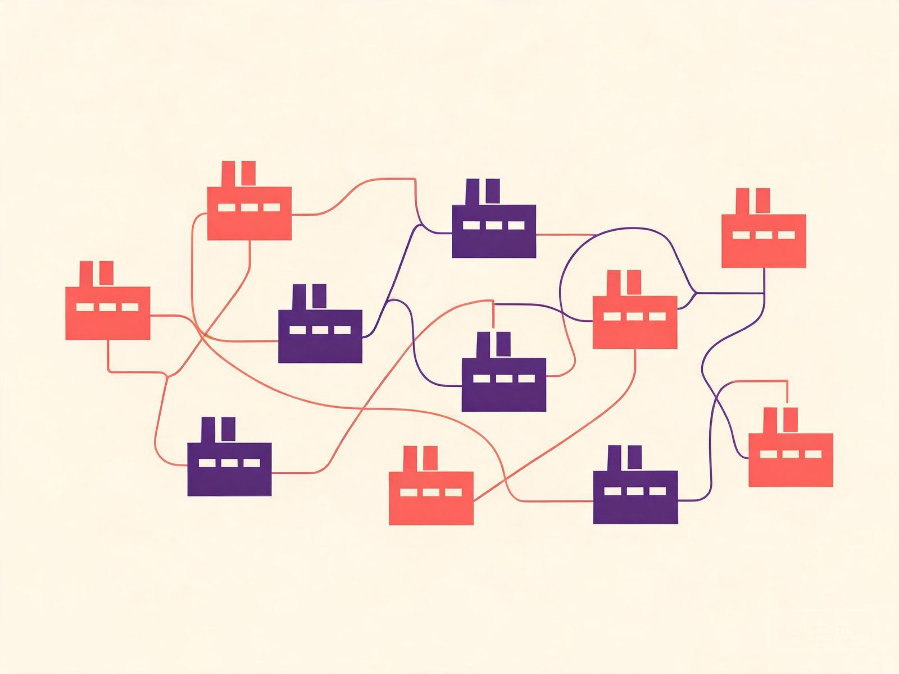

天枢南翼
天枢南翼
她说了四十分钟，没喝过水。她不是人
义乌北苑，旧厂房改的直播基地，三层隔成一间间直播间。七个数字人、二十三个直播间，一天连轴播二十小时。同一张脸在五个直播间卖五种货，被粉丝截了三张图——绿萝叶片朝向都一样。他不会累，也不会记得自己昨天说过什么。附七起数字人直播真实处罚案例（罚款 180 到 5,000 元，另有一例行政拘留）、《直播电商监督管理办法》2026 年 2 月已施行的标识义务，以及义乌 1.2 万主播、8 万从业者的底数。
义乌北苑，旧厂房改的直播基地，三层隔成一间间直播间。七个数字人、二十三个直播间，一天连轴播二十小时。同一张脸在五个直播间卖五种货，被粉丝截了三张图——绿萝叶片朝向都一样。他不会累，也不会记得自己昨天说过什么。附七起数字人直播真实处罚案例（罚款 180 到 5,000 元，另有一例行政拘留）、《直播电商监督管理办法》2026 年 2 月已施行的标识义务，以及义乌 1.2 万主播、8 万从业者的底数。
丽水莲都：1,859 元面霜，主播喊「假一罚四、售后兜底」，判赔 7,936 元，直播方连带，多出的 1,859 元就是那句承诺的价。深圳龙岗：5,610 元精油只供室内使用，主播庭上称「我是员工、职务行为」，判赔 16,830 元，他自己也一起赔。一个输在说了话，一个输在没说自己是谁。
11-04 热搜第一称短剧演员刘念「涉嫌刑事犯罪遭调查」，当晚工作室否认。次日她晒出郑州警方无犯罪记录证明，覆盖 2001-02-02 至 2026-11-04；另有一份 2 月生效判决。公司手里是一张受案回执，文号〔2026〕50024 号。11-05 解约案开庭未宣判，警方零通报。三千多万和一百多万，不是同一个数。
11 月 4 日下午，编剧叶非夜发文指控演员郭宇欣劈腿；两小时后对方回「纯造谣」并发律师函；傍晚 18:22，叶非夜改用本名「孔子叶」实名举报偷税，点了片酬私户、小红书隐藏广告、直播打赏四条。而对分量更重的税务举报，对方的律师声明一个字没提。税务部门至今零通报。
抖音 313.4 万粉的乐仔 Levi，被同居四年女友熙熙在见家长前夜翻出手机，10-27 发万字长帖附名单与转账。男方 10-28 道歉，认「原则性错误」，但称 21 人「有所夸大」，提出 50 万补偿、一年房租、半年生活费；又反指四年花了 300 万。她质疑这是封口费，说愿意退回去。
10 月 3 日，黄泽林拿下中国香港队史首枚亚运网球金牌，全场 16 记 Ace；同一天是陈康堤 22 岁生日。11 天后他在直播里说「结束啦」。又过 11 天，另一个女孩坐在他父母身边。他说 9 月分手、10 月才认识新人；港媒说 8 月已同居。两版差一个月。
9 月 5 日 14 时许，深沪国家中心渔港，52 岁的张万年听见有人喊「有人掉到海里了」。海面上仰躺着一位老人，几乎不能动，而渔港里常有大船往来。他跳下去，游出约 30 米，拖着人往回游。11 月 5 日，晋江市公安局颁了见义勇为确认证书和奖金。
井林村 600 多位老人围桌，5 位企业家捐资，村委会联合老人会每人发 200 元；金瓯村 67 桌，「金姑」王乌裳回村，732 位老人每人 500 元。报道里还有个数字：东石 60 岁以上约 21300 人，百岁老人 18 人。
红丝线、细铁丝、硬纸片、金箔纸、小木棍、剪刀——就这几样。双鹿双龟是祖母花，小鹿龟是新娘花，扁吉是婆婶花，双吉是喜事答礼花，单吉是白事搭礼花。她八九岁看母亲做，把步骤记下来，自己练。
11 月 2 日晚，龙湖镇烧灰村戏台，中宛高甲戏剧团演《三关明月》。中国剧协「壹元金种子计划」象征性收一元版权费，把演出权转给民营院团；首批 20 部，福建全省只有这一家入选。1 月 4 日陈埭溪边村首演，到 11 月已演 36 场。
陈埭海尾 615 位老人每人 500 元共 30 多万；深沪科任 998 人共 216800 元（人均约 217 元）；安海前蔡 243 人每人 1200 元，两家基金连续 11 年发；东石萧下 55 家企业接力，1491 人每人 200 元。
省文旅厅 2026 年乡村旅游优秀案例，全省 10 个，晋江新塘梧林入选。难的地方在产权：大量侨厝房契在海外，工作组多次跑到菲律宾找侨亲谈，一幢一幢谈下来。开放以来接待游客超 780 万人次，社区旅游总收入破 1 亿元。
11 月 8 日开幕，10 大主题展区，总展示面积超 100 万平方米，主馆近 300 家工贸企业，14 个国家和地区 42 家国际展商；发布「拼弧 2.0」技术标准。南安不产一块石头，产量却占全球 40%、进出口占全国 60%。
10 月 29 日夜，晋江市应急管理局「不打招呼、直奔现场」查了三家：宏泰机械行吊吊钩未设防脱钩装置、旋转部件未装防护罩、物料乱堆、5S 未落实；林家特殊鞋带厂堵塞消防通道；汐雨科技配电箱下堆杂物。当晚还组织了消防警报演练，两个不足是「响应不够迅速、集合点不清」。
石狮永宁黄金海岸，一名男子夜里去捡蛤蜊，没留意潮汐，涨潮把回岸的路断了。消防救援人员从水浅处过去，岸上无人机同步查看，到了礁石先给人穿好防护装备，无人机用灯光照明，最后和海上救援队一起把人护送撤离。
泉州市花生新品种观摩与鉴评活动在金井办，21 种水煮样品冒热气排开，从甜度、香气到软糯程度逐项打分。11 个品种在晋江豪泰农场试种。农场负责人王新川：「过去种植小琉球，果荚不够饱满；新品种果实更甜、个头更大。」
长沙望城，父母在宅基地上盖楼七百余平方米。母亲公证赠与把份额给了养子，她走以后养子说「遗产理应由儿子继承」，房子归他一人。五个亲生女儿起诉。调解结果：六人共有，胡飞 70%，五姐妹各 6%。租金按份额分，每年 12 月 31 日前付清。
2001 年四川广安一纸分家协议：四个儿子每人每月给父母 20 元，合计 80 元。二十五年后两位老人年过七旬、常年吃药，五个子女都拿得出钱，就是谈不拢。法院判自 2025 年起每人每年合计给七千余元——每个儿子每月约 583 元，二十九倍。
新疆乌苏，小王十二岁，自出生起由母亲一个人带。今年 4 月把生父告了：判补付十二年抚养费 7 万元，自 2026 年 1 月起每月 600 元至十八岁。叶某上诉：此前不知道孩子存在。二审只答一问——抚养费请求权不适用诉讼时效，驳回上诉。
北京朝阳法院：丈夫两年给同一位女主播打赏 44 万次，累计 16,718,059.20 元，两人 2019 年 6 月见面后确立恋爱关系。法院从那个月把账劈成两段，判平台返还 787.5 万元——平台分成六成。同年广州 20 万、合肥 50 余万两起，全部驳回。
定亲钱 1.8 万、彩礼 18.8 万、三金钱 2 万。退婚是女方大姐打微信视频说的。女方只退 18.8 万，称余款是赠与、且男方悔婚。北京昌平法院判：3.8 万也退——金额超出一般赠与、且未登记未同居。另附最高法四条对照：三天领证十日走人判全退，日常转账一分不退。
养子七成、五姐妹各六个点；一个人一个月二十块的赡养费；八年抚养费95,583.18 元；备注改「自愿赠与」照样判返 20 万；出轨那位彩礼还退 7 万；同居四年十三万一分没要回来。前面十五条仍是旧账：6750 万判 14 年、131.74%、冻 5.12 亿。
广州互联网法院：12 岁女孩在语音直播平台打赏 11 万余元，平台按 85% 退款、退 9 万余元，二审维持。平台两处过错——没核实主播身份，还有未实名账号也能开播结算。而家长曾协助完成人脸识别。同期七起案子，退款比例从 100% 到 70%。
离婚官司打了两年，女方账户从 177 万 剩到 23 万。她向亲属大额转账、多次 ATM 集中取现共 200 多万，说得出用途的核掉，剩下百余万说不清。深圳坪山法院判她一次性付男方 75 万元。
清越科技罚 17188 万元，其中 16488 万按非法所募资金的 20% 算。董事长高裕弟原拟罚 1050 万，先行赔付基金出资到位后减到 900 万，8 年市场禁入一天没减。3.7 亿先行赔付基金，申报窗口到 11-27。
晶华微 4 个证券账户、7 个银行账户被冻 5.12 亿元、期限 6 个月，全是 IPO 募集资金账户。上市四年，四个募投项目一个终止、三个延期到 2027 年 7 月，剩下 5.24 亿躺在理财里。
11 月 8 日黄仁勋在英伟达官网承认对妻子不忠；同日董事会成立独立董事委员会、请外部律师调查，同一份声明里又说继续信任。第二天收跌 4.3%，市值蒸发约 1900 亿美元。
伊尔库茨克防鼠疫研究所，28 岁女员工 9 月 25 日打破试管，10 月 2 日死亡。俄方称「不明原因肺炎」并排除鼠疫，世卫组织说病原体至今未确认。五方说法并排摆，第四列「没说什么」全是同一个答案。不确定度 U3。
海南商业航天发射场，卫星互联网低轨 29 组卫星入轨。按：跑船的人只关心一件事——出了近海，手机就是一块砖。
国家统计局 11 月 9 日发布。按：管食堂的只听「同比」——菜价同比涨了，餐标还是三块；车间的只听「环比」——环比持平，那就先不吵。
台风前两天的老井，井水先浑后清，趴到井口能听见橹声；也有人说，听见的是井底石头滚。井还在，水不喝了，井口盖了一块水泥板，只留一道缝。
压坏的、退回来的纸箱，一层横一层竖码起来，外面抹灰。推倒那天纸箱还是干的——不让它见水，它能站几十年。
26/118（11 月 7 日）11·14·17·21·22·29，特别号 40；26/117 与 26/116 一并列出。只录已开奖号码，不写预测、不画玄机、不卖特码、不给下注入口——内地「买码」属违法赌博，本栏不劝人碰。
金井围头，七千亩养殖海域，全国「一村一品」鲍鱼示范村。今年船位排不上，老板的儿子算完账说：「运费五万，不如省下来装设备。」五十六岁的吴阿狮蹲在排边，抓起一把碎海带在水里一搓——散了。「这不是料，这是浆糊。」七部连载之一，五回，可听。
内坑，三十八岁的模具师傅蔡火旺，一辈子只跟一粒料打交道。会议室里没人听他讲，他就半夜回车间，在模具上打了三个孔。二十双鞋放在门口，第二天被老板的侄子拿去领了功。
英林，全世界每一百件泳装有三十件来自晋江，三分之二以上出自这个镇。客户临时改款，外贸经理说广东都做不到。洪建发说：「广东做不到，是因为广东离我们三百公里。」
安海龙山寺（隋，千手千眼观音一千零八手眼）、深沪崇真殿（唐末，玄天上帝）、水头天心洞（隋）、晋江草庵（宋元，世界唯一摩尼光佛石雕）、金井基督教堂（1933）——同一小区域内几种信仰各自安在。真正有用的是后半段：这些日子怎么变成工厂的排产变量。
泉州市高甲戏剧团副团长林凤锦的两组数字：现在年演 500 场以上、票一放就抢光；申遗前一年约 200 场、台下清一色老人。团里已有二十多名年轻人，「00 后」陈德佳 2021 年至今演出超 1000 场。
《终末地》公测首日，海外 PayPal 开始替别人付钱。官方 09:58 收到第一条报告，11:05 关掉通道——中间那六十七分钟，账单还在长。一个玩家余额被清空 400 美元，第二天要付账单；一个损失 600 美元，说付不出房租。而这款游戏两周流水 12 亿。
网名宋兵甲_zbdu，认证是鹰角员工。他没要加钱，没要调休，只问了一句「有没有考虑过」。同一家公司，职场社区挂着另一个标签：10-7-5、保底 16 薪、公积金 12%。同一页里还有一句常被跳过的话——在研项目「比较卷，偏向 996，但是会给加班费」。
《影之刃零》10 月 29 日解锁，首日 Steam 峰值 43 万，好评率停在 79%。四天后在线爬到 83.4 万，2026 年单人游戏在线纪录、单机历史第六，好评率回到 89%，8 万份评测。11 月 2 日官方宣布 72 小时 400 万份；研发 3 至 4 亿，国区 268 元。同一天，183 款国产版号下发，2026 累计 1,766 款。
鸣潮 3.8 一个版本开了十个五星的口子，卡池开到 12 月 21 日。玩家原话：「每次拿 01 角色，都得氪金 1k 往上，孝子还说福利没减，连歪更是日常操作。」21 ÷ 80 = 26.25%——但前提是你先抽满那 80 抽。返的是抽数，锁的是顺序。
从十镇往外盘到晋江、泉州、厦门。晋江 SM 的卡游店有招聘为证；厦门银泰集美店 2000 多平米的「IN 趣次元场」写进了市商务局的答复函，半年办了上百场活动。附 11 月末到元旦的活动日历：12 月 19 日方舟同人 ONLY、12 月 23 日晋江运动番 Only。
1 月 22 日公测，翌日全球下载破 3000 万，两周流水 12 亿；10 月 15 日登 Steam，峰值近 5700——因为锁了国区。同月《影之刃零》首日峰值 43 万。下载量、流水、平台在线，三个口径不能横着比。

伞在东石、石在水头、拖鞋在内坑、内衣在深沪、泳装与服装在英林金井龙湖，食品纸品机械在安海。四层企业结构：龙头约 2%、规上约 14%、小微代工厂约 58%、家庭作坊约 26%（本刊估算）。
「本地人，有经验。」同一家厂的普工岗写的是「计件工资，月收入 3500—4500 元以上」。同一张页面，办公室岗与车间岗的价差就这么写着。
晋江 2026 年 10 月住宅挂牌租金 22.36 元/月/平方米，环比下降 3.66%，平均总价 1881 元。750 ÷ 30 ≈ 25 元（本刊换算）：单价不低，面积小，单间才是这里的基本盘。挂牌不是成交。
新建码头 213 米、增设 4 个 1000 马力泊位，力争 10 月底竣工验收。同一条报道还写到围头一级渔港（2.96 亿元、11 个 600 马力泊位）与东石白沙二级渔港（年内有望投用）。
7 月 3 日，镇政府带制伞企业家赴泉州文旅集团，谈场景嵌入、IP 赋能、联合开发、线下市集。三个多月后：优安纳降低起订量，富祺进入第二次打样，亚辉在组建电商与文创团队。
第二十五届中国（南安）水头国际石博会 11 月 8—11 日举行，十大展区，首次采用「1+365 天」常年展示。组委会的表述是：从重「卖板材」转向重「卖设计、卖场景、卖方案」。
文旅综合消费收入 1869 万元；上悦城、大润发等核心商圈假期客流 27 万人次、营业额突破 900 万元；辖区酒店国庆假期持续满房。
2026 年 2 月落户。省政府门户的表述是：以链主之姿吸引电解液、正负极材料、隔膜、结构件等上下游配套企业靠拢。原文未披露投资额与投产时间。
一期租用晋江国际芯创港标准厂房 8300 平方米，二期规划用地 50 亩。全部达产后，原文预计年营收 30 亿元、税收 1.5 亿元。投产时间为原文口径，非本刊核实。
设计时速 160 公里，建成后实现厦漳泉一小时通勤。十镇范围内的站点设置，原文未逐镇列明，本刊不作推断。
这个频道还没有可点开原页面的条目。按本刊规矩，空着不出。